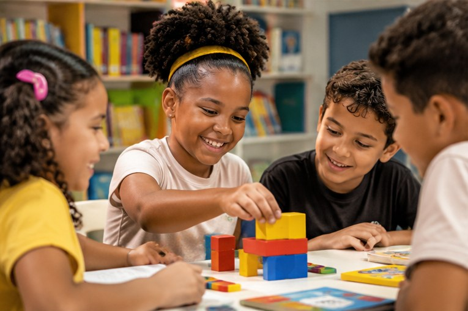

Brincar e aprender
Jogos e desafios que envolvem as crianças.
Não é só reforço. É outra forma de aprender. Uma proposta que respeita diferentes ritmos e valoriza curiosidade, criatividade e participação.
Manifestar interesse
Queremos relacionar os conteúdos escolares às brincadeiras, às experiências cotidianas e ao universo infantil, construindo uma relação mais positiva com a aprendizagem.
Jogos e desafios que envolvem as crianças.
Leitura, histórias, interpretação e escrita.
Experiências, perguntas e raciocínio.
Troca de ideias e aprendizagem coletiva.
Atenção às necessidades de cada criança.
Organização, confiança e participação.
Compreensão e expressão por atividades significativas.
Números e problemas com materiais concretos.
Observação, imaginação e construção de perguntas.
Hábitos de estudo e confiança para novos desafios.
A proposta prevê observar avanços, identificar dificuldades, adaptar atividades e manter diálogo com os responsáveis. Não substitui avaliações clínicas ou atendimentos especializados quando necessários.
O Fundamental I terá valor social de participação ainda a definir. Horários, locais e condições serão divulgados posteriormente.
Manifestar interesseO formulário não garante vaga, não constitui matrícula e não gera compromisso financeiro.